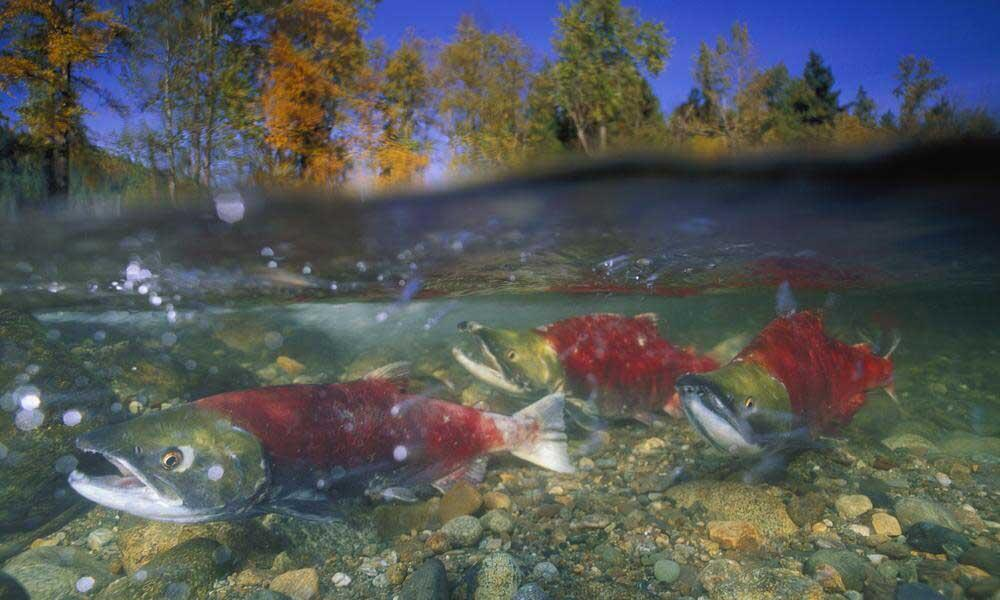

TASTY FISH
back to home

ALASKAN SALMON
ABOUT ME
Five species of Pacific salmon thrive in the North Pacific waters of the US and Canada: chinook (also called king),
coho, pink, sockeye, and chum salmon. They begin their lives in freshwater streams, lakes, and rivers and migrate to the
sea as small fish called smolts. After they transition from fresh to salt water and grow into adults in the high seas of
the North Pacific Ocean, a biological clock tells the salmon when it's time to return to the place of their birth to
spawn a new generation. For the indigenous people of the Pacific Rim, salmon are a primary source of protein and also a
part of their culture. Native groups celebrate the first return of salmon and individuals catch and store salmon for
their families to eat all winter.
Salmon play a major role in many economies. The North Pacific provides the primary source of wild salmon that are
harvested commercially and eaten in homes and restaurants all over the world. The Alaska salmon fishery, responsible for
around 90% of wild caught salmon in North America, is certified by the Marine Stewardship Council.
ENVIRONMENTAL THREATS
Our warming climate has a significant negative impact on wild salmon stocks along the Pacific coast. As ocean
temperatures rise, marine habitats become nutrient poor and can cause confusion for salmon trying to find their way back
to river mouths. Additionally, the increased carbon dioxide in the air has been attributed to ocean acidification, which
has massive impacts on salmon food chains.
Human industrial activities like dam developments have played a key role in salmon population declines on the Pacific
coast as infrastructure destroys the streams and watersheds fish require for survival. On the North and Central Coasts of British Columbia, the proposed 670-kilometre Coastal GasLink pipeline poses a high
risk to migrating salmon populations. During the construction process, water quality in salmon migration routes will be
severely impacted with increased sedimentation from trench excavation, erosion, and run-off from worksites. A series of
new roads and access points to previously inaccessible areas would also result from the completion of the project. This
increased human accessibility would indirectly increase salmon mortality through fishing and other human impacts in
these sensitive salmon habitats. Pipeline failures and their impact on wild salmon must also be considered. Petroleum products spilling into the
surrounding salmon environment would likely have catastrophic impacts on fish.
Salmonids are cold water fish which typically die when exposed for very long to freshwater temperatures above
about 20º C. (72º F.) Global warming has pushed the average summer temperatures of many west coast river systems above
that mortality threshold, killing many fish. Global climate change is also diminishing total river flows throughout the
northwest and California, as well as changing the basic hydrology that these fish evolved with. In many areas their
already limited range is likely to contract. Depleted genetic diversity as well as accelerated habitat loss due to human
development has reduced their ability to respond to these stresses. Changing ocean conditions, including ocean
acidification, are causing additional stresses to these populations from global warming.
ENDANGERMENT RISK: NEAR THREATENED
SOURCES
𓆟 worldwildlife.org
𓆟 pacificwild.org